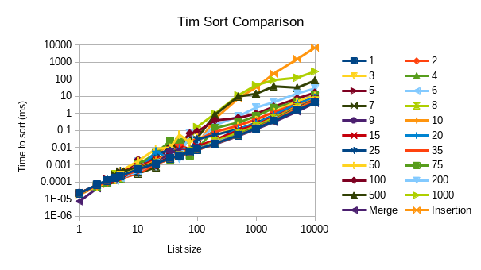

No Tim sort will outperform merge sort—the extra overhead of keeping track of a list's length will hurt performance too much, and insertion sort was not much better than merge sort in the last problem even when it was better.
The code I used to test these algorithms can be found at https://github.com/khuldraeseth/cse431hw4. Clone the repository, move into p2, and stack run -- --output wherever-you-want-the-results.html to run these tests yourself. Compiles with -threaded.
For reasons I can't fathom, Criterion produces a faulty HTML document despite the proper measurements being printed to standard output. Here is what was printed.
Below are three plots of the data from standard output, compared with the results for merge sort and insertion sort from problem 1. No Criterion document this time, unfortunately.
Some Tim sort outperformed merge sort for lists of lengths between 3 and 100! But no choice of k consistently produced this result, and for sufficiently large lists merge sort has no equal.
I would expect some improvement if I were to approximate list sizes instead of calculating them exactly. This would result in fewer computations per recursive call, and it was established in the first problem that any speedup from switching to insertion sort would be minimal. But I can't be bothered to do that.
Under the conditions of this test, increasing k almost monotonically slowed down Tim sort for large lists, with k=1 producing a sort almost as fast as merge sort and k=1000 doing much worse.